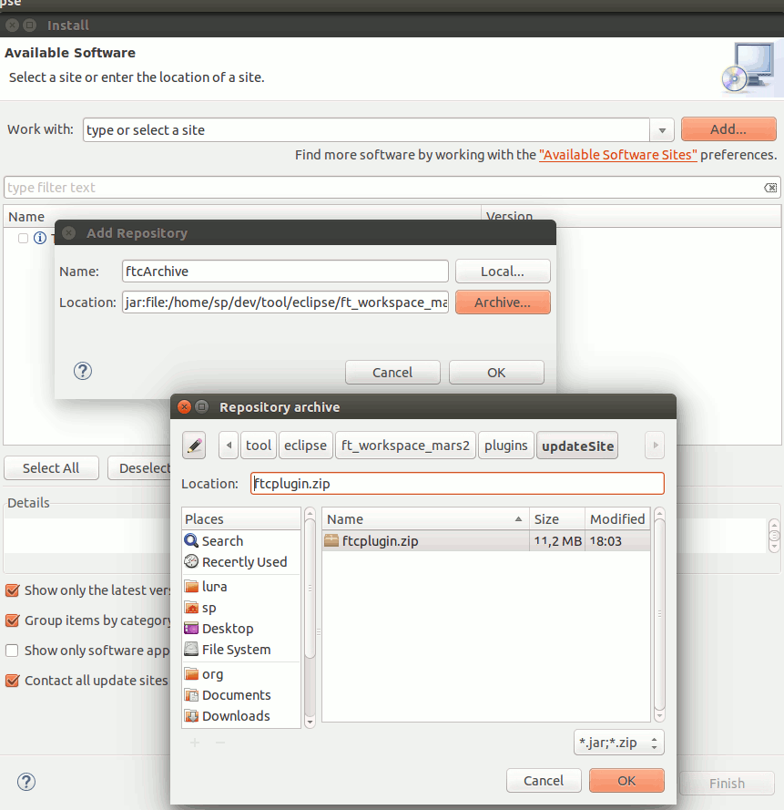
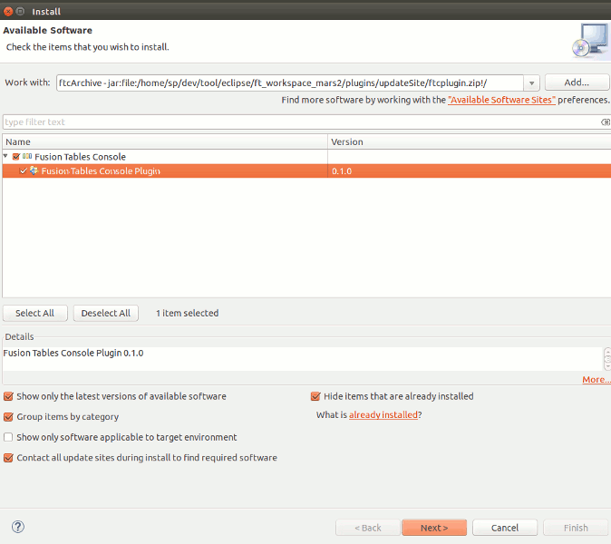

Fusion Tables Console Eclipse Plugin
View on GitHub
Google Fusion Tables™ service is a trademark of Google Inc.

You can avoid queries like this one, which was the reason to start the project in the first place: CREATE VIEW V AS (SELECT t1.total, t2.id, t1.jobwohnen, t2.datumB FROM 1echZ_63RosRjW43qItffBErXayC9VXFiB6quHXA6 AS t1 LEFT OUTER JOIN 1XNksblRgD3OvBTmyN5Kpeq-2bGSjdWHpL-20tmUg as t2 ON t1.total = t2.datumB);
Before execution symbolic table names get replaced by their table IDs. You can get the preprocessed query with menu entry Fu -> View preprocessed query at cursor.
Get started
You need some fusion tables you own or some external table IDs, a google developers project with activated fusion tables api and an OAuth2 client ID (with application type "other") for the project. Download the update site file (ftcplugin.zip), in Eclipse go to Help -> Install new software -> Add, choose Archive and select ftcplugin.zip. Choose the new created software site and the plugin therein, continue with Next and some more OKs.
 After Eclipse restarted go to Window -> Open perspective -> Other and choose the Fusion Tables perspective to enable the Fu menu entry and the Export Fu Data entry in the File menu.
 Choose Window -> Preferences -> Fusion Tables Console, enter client id and secret, then press Authenticate. The authentication workflow will try to open your default browser and take you through further steps. If it doesen't show up, you can find the required URL in the log pane, proceed manually in this case. If anything goes wrong with the authentication, the client waits for the defined timeout period and then cancels. In case of success the client stores the credentials and authenticates automatically in future sessions.
Once authenticated press ctrl+space in the empty editor window for a list of top level Sql statements.
It is somewhat tested on Ubuntu 15, Oracle Java(TM) SE Runtime Environment (build 1.8.0_60-b27), Eclipse Luna and Mars 1+2. Requires Java 7.
Choose Window -> Preferences -> Fusion Tables Console, enter client id and secret, then press Authenticate. The authentication workflow will try to open your default browser and take you through further steps. If it doesen't show up, you can find the required URL in the log pane, proceed manually in this case. If anything goes wrong with the authentication, the client waits for the defined timeout period and then cancels. In case of success the client stores the credentials and authenticates automatically in future sessions.
Once authenticated press ctrl+space in the empty editor window for a list of top level Sql statements.
It is somewhat tested on Ubuntu 15, Oracle Java(TM) SE Runtime Environment (build 1.8.0_60-b27), Eclipse Luna and Mars 1+2. Requires Java 7.
Further information
A detailed description of the functionality and some remarks on the fusion tables service itself you can find with the description of the standalone client. Please note that the key code mapping described there is different from the plugin version. It also contains some less mainstream features that the plugin version has not.There is a known issue with GTK under Linux when Eclipse tries to access the desktop, which is precisely what the authentication workflow does. If that happens to you, please refer to the straight forward workaround in the bug description. It cleared the issue for me with Mars 2, with Luna it didn't happen in the first place.